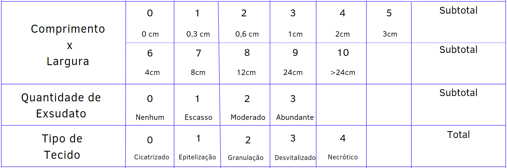

Escala de PUSH
Uma das maneiras Para acompanhar a evolução da ferida, é a escala de PUSH e com ela é considerado três parâmetros para a avaliação do processo de cicatrização da ferida e dos resultados da intervenção:
Seu comprimento e sua largura; Após a multiplicação das duas medidas para a obtenção da área da ferida, encontre-se valores que variam de 0 a >24cm 2 e escores que variam de 0 a 10, conforme a área tratada.
Avaliações após a remoção da cobertura e antes da aplicação de qualquer tópico do agente. É classificado como ausente, pequeno, moderado e grande, correspondendo a escores de 0 (ausente) a 3 (grande).
Definida de acordo com o tipo de tecido nessa região, sendo especificada como: tecido necrótico (escara); esfacelo, tecido de cores amarelas ou brancas, que adere ao leito da ferida e apresenta-se como cordões ou crostas grossas, tecido de granulação, de cores rósea ou vermelha, de aparência brilhante, ecológica e granulosa; tecido epitelial, aparece como novo tecido róseo ou brilhante; e ferida fechada ou recoberta, aquela completamente recoberta com epitélio. Esses tecidos correspondem aos escores 0 (ferida fechada), 1 (tecido epitelial), 2 (tecido de granulação), 3 (esfacelo) e 4 (tecido necrótico).
